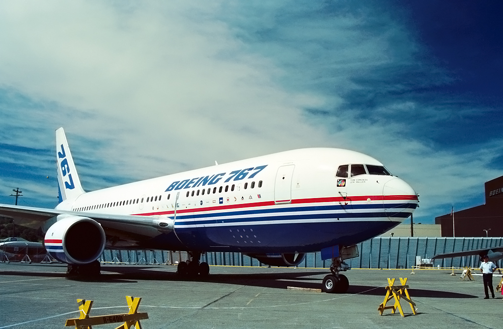

Overview
The Boeing 767-300 is a wide-body, twin-engine airliner developed by Boeing. It is part of the 767 family, which has been in service since the early 1980s. The 767-300 variant is designed for long-haul flights, with the capacity to carry up to 350 passengers. It is primarily used for both commercial passenger service and as a cargo aircraft, with its large capacity and range making it a popular choice for airlines operating international routes. The 767-300 is known for its efficiency, reliability, and performance across a wide range of flight conditions.
Specifications
| Feature | Details |
|---|---|
| Manufacturer | Boeing |
| First Flight | September 30, 1982 |
| Service Entry | 1984 |
| Length | 54.9 meters (180 ft 4 in) |
| Wingspan | 47.6 meters (156 ft 1 in) |
| Height | 15.8 meters (51 ft 10 in) |
| Max Takeoff Weight | 179,000 kg (395,000 lbs) |
| Maximum Speed | 913 km/h (567 mph, Mach 0.86) |
| Cruising Speed | 850 km/h (528 mph, Mach 0.84) |
| Range | 6,000 km (3,700 miles) |
| Service Ceiling | 13,100 meters (43,000 feet) |
| Engine Type | General Electric CF6, Pratt & Whitney PW4000, or Rolls-Royce RB211 |
Airlines Using the Boeing 767-300
| Airline |
|---|
| American Airlines |
| Delta Air Lines |
| United Airlines |
| Air Canada |
| Japan Airlines |
| Qatar Airways |
| British Airways |
| Alaska Airlines |
| Singapore Airlines |
| China Airlines |
Crash History
The Boeing 767-300 has a solid safety record with a low incidence of crashes relative to its extensive service history. Like all aircraft, the 767-300 has been involved in some incidents over its long history of operations, but it has proven to be a reliable and safe aircraft overall. The aircraft is equipped with advanced safety features, and many of the incidents involving the 767-300 have been related to factors other than design or structural failures.